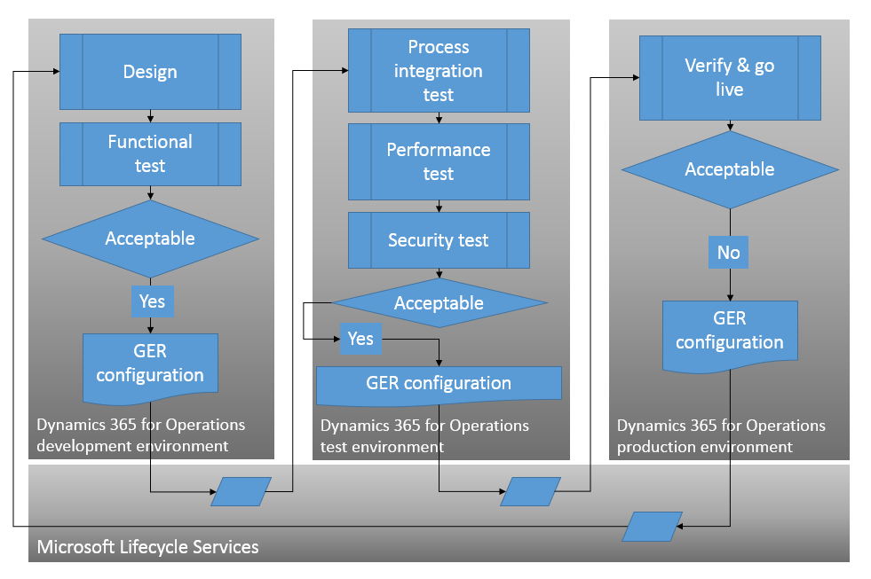

Den Konfigurationslebenszyklus der elektronischen Berichterstellung (EB) verwalten
[!include[banner](../includes/banner.md)]In diesem Thema wird beschrieben, wie Sie den Lebenszyklus von Konfigurationen für die elektronische Berichterstellung (EB) für die Microsoft Dynamics 365 Finance-Lösung verwalten.
Übersicht
Die elektronische Berichterstellung (EB) ist ein Modul, das gesetzlich vorgeschriebene und länderspezifische elektronische Dokumente unterstützt. Im Allgemeinen setzt ER die Möglichkeit der Ausführung der folgenden Aufgaben für ein einzelnes elektronisches Dokument voraus. Weitere Informationen finden Sie unter Elektronisches Berichtswesen (ER) Übersicht.
Entwerfen einer Vorlage für ein elektronisches Dokument:
Identifizieren Sie die erforderlichen Datenquellen, die in diesem Dokument angezeigt werden können.
- Zugrundeliegende Daten (Datentabellen, Datenentitäten usw.)
- Prozessspezifische Eigenschaften (Ausführungsdatum und Zeit, Zeitzone)
- Benutzereingabeparameter (definiert nach Endbenutzer bei Laufzeit).
Definieren der erforderlichen Dokumentelemente sowie ihrer Topologie, um das Format des endgültigen Dokuments anzugeben;
Konfiguration des gewünschten Datenflusses von ausgewählten Datenquellen in definierten Dokumentelementen über Datenquellenbindungen zu den Dokumentformatkomponenten und Definition der Prozesssteuerungslogik.
Erstellen einer Vorlage zur Verwendung in anderen Instanzen:
- Umwandeln einer Dokumentvorlage, die in einer ER-Konfiguration erstellt wurde, und Exportieren der Konfiguration aus der aktuellen Anwendungsinstanz als XML-Paket, das entweder lokal oder in LCS gespeichert werden kann.
- Umwandeln einer ER-Konfiguration in eine Anwendungsdokumentvorlage.
- Importieren eines XML-Pakets, das entweder lokal oder in LCS in die aktuelle Instanz gespeichert wird.
Anpassen einer Vorlage eines elektronischen Dokuments:
- Verschieben einer Vorlage von LCS zur aktuellen Instanz als ER-Konfiguration:
- Entwerfen Sie eine benutzerdefinierte Version einer ER-Konfiguration und behalten Sie eine Referenz zur Basisversion.
Integriert eine Vorlage mit einem bestimmten Geschäftsprozess, so das er in der Anwendung verfügbar ist:
- Konfigurieren der Anwendungseinstellungen, damit eine ER-Konfiguration verwendet werden kann, indem Sie auf diese Konfiguration in einem prozessbezogenen Parameter verweisen. (Wenn Sie z. B. auf die ER-Konfiguration in einer bestimmten Kreditorenkonten-Zahlungsmethode zur Generierung einer elektronischen Zahlungsnachricht zur Verarbeitung von Rechnungen verweisen.)
Verwenden einer Vorlage in einem bestimmten Geschäftsprozess:
- Ausführen einer bestimmten ER-Konfiguration in einem Geschäftsprozess aus. (Wenn Sie z. B. auf die ER-Konfiguration in einer bestimmten Kreditorenkonten-Zahlungsmethode zur Generierung einer elektronischen Zahlungsnachricht zur Verarbeitung von Rechnungen verweisen.)
Konzepte
Folgende Rollen und Aktivitäten gehören zu ER-Konfigurationslebenszyklen.
| Rolle | Aktivitäten | Beschreibung |
|---|---|---|
| Funktionaler Berater für elektronische Berichterstellung | Erstellen und Verwalten von ER-Komponenten (Modelle und Formate). | Eine Mitarbeiter, der domänenspezifische ER-Datenmodelle gestaltet, entwirft die erforderlichen Vorlagen für elektronische Dokumente und bindet sie entsprechend. |
| Entwickler für elektronische Berichterstellung | Erstellen und Verwalten von Datenmodellzuordnungen. | Ein Spezialist, der die erforderlichen Finanzdatenquellen auswählt und sie an domänenspezifische ER-Datenmodelle bindet |
| Supervisor Buchhaltung | Konfiguration von prozessbezogenen Einstellungen, die auf ER-Artefakte verweisen. | Zum Beispiele eine Rolle Supervisor Buchhaltung, die die Einstellungen einer ER-Konfiguration in einer bestimmten Kreditorenzahlungsmethode zulässt, um eine elektronische Zahlung zur Verarbeitung von Rechnungen zu generieren |
| Sachbearbeiter Kreditorenkontozahlungen | Verwenden von ER-Artefakten in einem bestimmten Geschäftsprozess. | Beispielsweise eine Sachbearbeiter Kreditorenkontozahlungen-Rolle, die die für die Generierung von Nachrichten für elektronischen Zahlung zulässt, die auf dem ER-Format basieren, das für eine bestimmte Zahlungsmethode konfiguriert ist |
Er-Konfigurationsentwicklungslebenszyklus
Bei den folgenden EB-bezogenen Gründen empfehlen wir, Ihre EB-Konfigurationen in der Entwicklungsumgebung als getrennte Instanz von Finance and Operations zu entwickeln:
- Benutzer, die entweder die Rolle des Elektronischen Berichterstellungsentwicklers oder des funktionalen Beraters der elektronischen Berichterstellung ausüben, können Konfigurationen bearbeiten und anschließend für Testzwecke ausführen. Dieses Szenario ruft möglicherweise Geschäftsabläufe und Tabellen auf, die für die Daten und die Leistung der Instanz schädlich sein können.
- Das Aufrufen von Geschäftsabläufen und Tabellen als ER Datenquelle von ER Konfigurationen sind bei Einstiegspunkten und angemeldeten Unternehmensinhalten nicht beschränkt. Deshalb können Benutzer mit der Rolle Entwickler für elektronische Berichterstellung oder Funktionaler Berater für elektronische Berichterstellung auf geschäftskritische Daten zugreifen.
ER-Konfigurationen, die in der Testumgebung entworfene wurden, können in die Testumgebung hochgeladen werden, um eine Konfigurationsauswertung (korrekte Prozessintegration, Korrektheit der Ergebnisse, Leistung) vorzunehmen und das Qualitätsmanagement (Korrektheit der Rollen getriebener Zugriffsrechts, Aufgabentrennung, usw.) sicherzustellen. Die Funktionen, die den ER-Konfigurationsaustausch ermöglichen, können zu diesem Zweck verwendet werden. Nachgewiesene ER-Konfigurationen können außerdem entweder zu LCS hochgeladen werden (dort können Sie mit Dienstleistungsabonnenten geteilt werden).

Zusätzliche Ressourcen
Überblick über die elektronische Berichterstellung (Electronic reporting, ER)